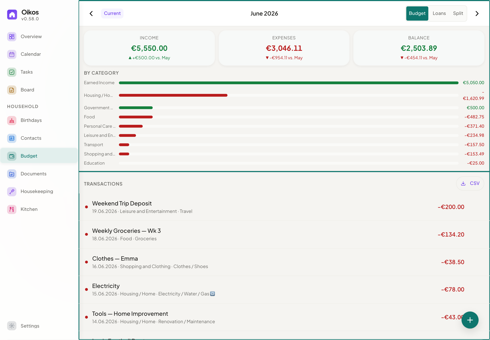
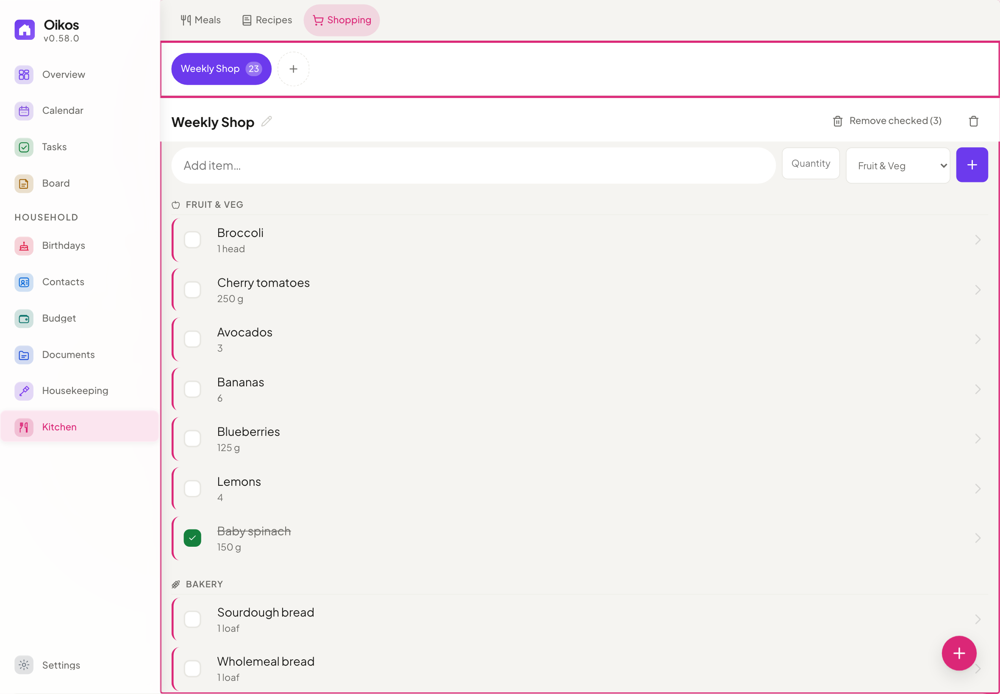

Open Source · Privacy-First · No Subscriptions
Your family. Your data.
Your home.
One private place for everything that keeps your family running — without giving your data to Big Tech.

One private place for everything that keeps your family running — without giving your data to Big Tech.
The problem
Tasks here, shopping there, calendar somewhere else. Nothing talks to each other.
Notion, Google One, iCloud — another invoice every year. No way out.
Your calendar on Google's servers. Your notes on Dropbox. Who actually owns your family's data?
There's a better way.
Why Oikos
No subscriptions, no vendor lock-in, no data leaving your home.
AES-256 encrypted database with SQLCipher. Zero telemetry. Your data never leaves your server.
Runs on a Raspberry Pi, a NAS, or any server. Docker or Podman makes setup a one-liner.
MIT licensed. Inspect, modify, extend, contribute. Built in the open for families who care about transparency.
Pure ES modules, vanilla JS, plain CSS. No bundler, no transpiler, no framework. Ships what you write.
Your Data. Your Private Place
Collaborative lists with aisle categories. Import ingredients directly from your meal plans.
Track income and expenses with 15 currency options, recurring entries, loan tracking, and CSV export.
Birthday tracker with automatic annual calendar events, age display, and customizable reminders.
Upload and manage family files with 14 category tags, per-document visibility, and drag-and-drop support.
Installable PWA on any device. Offline support, polished mobile navigation, touch-safe controls, dark mode, and responsive layouts from phone to desktop.
Features
A complete set of tools designed for families — seamlessly working together.
Shared tasks with deadlines, priorities, subtasks, and recurring schedules. Assign to multiple family members simultaneously with stacked avatar display. Kanban board with one-tap status changes.


Weekly drag-and-drop planner with ingredient lists. Automatically export ingredients to your shopping list with one click.


Two-way sync with Google Calendar and CalDAV providers (iCloud, Nextcloud, Radicale). Subscribe to public ICS calendars. Recurring events with yearly support. File attachments for events.


Track who spent what, split shared costs automatically, and see exactly where the money goes. 15 currencies, recurring entries, loan tracking, and CSV export.


One shared shopping list for the whole family. Add ingredients from your meal plan in one tap — everyone sees updates in real time, organized by aisle.


Preview
A clean, intuitive interface with readable work surfaces, tuned touch targets, and layouts that adapt to your device and preferred theme.
 DashboardTasksCalendarShoppingMeals
DashboardTasksCalendarShoppingMeals RecipesBudget
RecipesBudget Notes
Notes Contacts
Contacts Birthdays
Birthdays Housekeeping
Housekeeping Settings
SettingsOne command launches a setup wizard in your browser. No configuration by hand.
Create an admin account and choose your preferences. Takes 2 minutes.
Add family members, set roles, and start using Oikos together.
Free. Open source. Runs on your server. No subscriptions, ever.